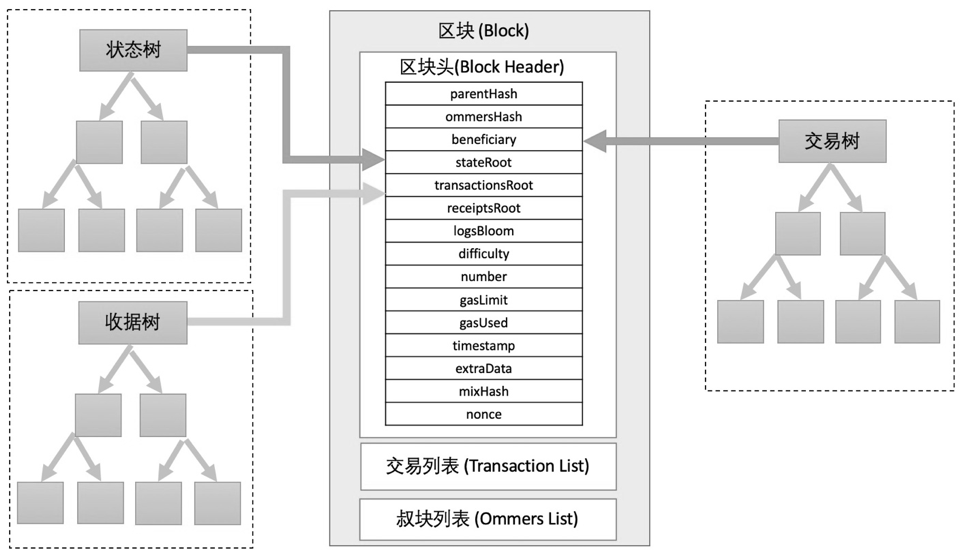

资料篇：区块¶
一个 “区块” 究竟长成什么样子？ 区块之间如何串联起来成为单向的区块链？
以太坊对的区块定义是一个对象，包含了区块头和区块体两个组成部分。
区块头 较为轻量级，包含了一系列的数值、引用的数值以及哈希值, 总长度在 508Byte 左右；
区块体 较为重量级，包含了该区块收纳的交易列表和叔块列表，长度视包含的交易多寡而定，目前在 20KB 左右 。
轻量级的区块头可供客户端软件快速通过网络下载，在遇到感兴趣区块的时候，加载区块体并加以验证其中的交易。完整的区块的内容如下表所示。
| 分类 | 域 | 描述 |
|---|---|---|
| 区块信息 | Number | 区块高度编号 |
| Timestamp | Unix 格式的时间戳 | |
| Hash | 本区块的哈希值 | |
| ParentHash | 前一个区块的哈希值 | |
| Nonce | PoW 算法的哈希值 | |
| ExtraData | 额外的信息 | |
| 树信息 | transRoot | 交易树的根哈希值 |
| stateRoot | 状态树的根哈希值 | |
| receiptsRoot | 收据树的根哈希值 | |
| LogsBloom | 该块的关键日志索引集合 | |
| 挖矿/矿工信息 | Miner | 挖掘该块的矿工账户地址 |
| gasLimit | 当前块允许包容的最大 gas 值 | |
| Difficulty | 当前块的挖矿难度值 | |
| totDifficulty | 区块链的总难度值 | |
| Size | 当前块长度(以Byte为单位) | |
| 区块信息 | Sha3uncles | 叔块列表的哈希值 |
| Uncles | 所引用的叔块列表 | |
| Transactions | 所包含交易列表 |
区块信息
区块的第一部分信息，包含了仅与本区块相关的内容，和其他部分相对独立。
Number区块编号：表明矿工希望该块参与哪个高度的区块竞选。Timestamp时间戳：该区块被挖掘出的时间，以秒为单位的 Unix标准时间戳。Hash：该区块的整体数据的哈希值，和本区块内容唯一对应。ParentHash父块哈希值：本区块基于前一个区块的哈希值，该哈希值唯一指定了前一个区块是哪块。Nonce：挖掘以太坊区块所需的工作量证明算法的一个参数，重要性处在挖矿概念的核心位置。不断调整该参数代入工作量证明算法最终能产出满足共识机制的特殊结果值。ExtraData：区块额外数据 Hex 值（可选），由打包的矿工来填写，该值的数据自由度高，例如高度为 #5907648 [1] 的区块，该值填写的是“七彩神仙鱼”，是一个昵称。
挖矿/矿工信息
区块的第三部分信息，包含了与挖矿相关的数据，这些数据都是挖矿过程中设置的硬指标或者挖矿消耗的花费信息。
miner矿工地址：发掘该区块的矿工的公开地址，挖矿奖励将直接发送给该地址。gasLimit区块最大消耗 gas 上限: 规定了单一区块所有交易集合所能够消耗的 gas 花费最大值。该上限保证了矿工出块的速度、限制每个矿工能够打包的交易数目。这个值可以根据矿工投票与协议而调整。difficulty难度值：当前块的挖矿难度值，该值通过两次区块被挖掘之间的时间来动态调整。这个值的计算代表了矿工在计算工作量证明时候面临的难度，保障区块的出块速度在15秒左右的水平。具体公式是：block_diff = parent_diff + parent_diff // 2048 * max(1 - (block_timestamp - parent_timestamp) // 10, -99) + int(2**((block.number // 100000) - 2))
- 其中block_diff 代表当前块难度，parent_diff 是上一个区块难度，block_timestamp 是当前块的时间戳，parent_timestamp 是上一个区块时间戳，block.number 是当前块试图入选的区块高度。
totdifficulty总难度值: 在目前区块之前的所有区块链中区块包含的所有难度值总和。该值的高低暗示了当前这条链的总难度是否是竞争数条链中最高的，难度积累最大的链条即为最长的链条。size区块体积：当前区块的总体积，用字节 Byte 为单位来表示。sha3uncles叔块集合的哈希值：当该区块包含对叔块引用时，这些叔块数据的哈希值填入该值，作为校验手段。
区块体
区块的第四部分信息。区块体是区块中占大头的数据区域，可以占领到 75% 以上的区块空间。它包含了交易数据的列表，以及引用的叔块的列表。
transactions交易列表： 所有入选该区块的交易的哈希值列表，每个哈希是一个32字节的数据。根据哈希值，可以用客户端在以太坊节点上唯一查询该笔交易。uncles叔块列表：所有该区块引用的叔块的哈希值的列表，每个哈希也是一个32字节的数据。根据该值可以唯一在区块链上查询该区块。叔块是未能成功竞争进入区块链的区块。被成功引用的叔块可以获得少量奖励。
图 4-12 是一个完整的区块的示意图，图中中间区域是以太坊的区块，包含了区块头和区块体，图中左侧、右侧是我们提及的状态树、交易树和收据树三种树型结构。

{kind=link}
一个以太坊区块的示意图
| [1] | 笔者注：该区块数据参考区块链浏览器 https://etherscan.io/block/5907648 |